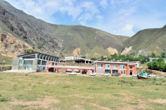

§ 01 · Orientation
About
I am an Assistant Professor of Computer Science and Engineering at GCET Kashmir, teaching core undergraduate courses to B.Tech CSE students. My PhD at NIT Srinagar explored blockchain technology beyond cryptocurrencies — harnessing it to remove problems of trust and security in real applications.
Before academia I was a Research Scientist in blockchain and cryptography at Parity Financial (London), where I worked on custody infrastructure, transaction construction, and zero-knowledge privacy layers.
My teaching materials are published openly here, so students and fellow instructors can reuse, adapt, and improve them.
“Security is the balanced mix of feeling and reality.”

§ 02 · Appointments
Experience
Assistant Professor, Computer Science & Engineering
Government College of Engineering & Technology (GCET), Kashmir, India
Teaching core and specialized undergraduate courses to B.Tech CSE students — including this site’s CS-401 materials.
Research Scientist, Blockchain & Cryptography
Parity Financial (Parfin) · London, UK
Researched and improved the underlying cryptography, blockchain, and security mechanisms behind custody infrastructure; built proofs of concept and helped teams integrate new blockchain platforms.
Subject Matter Expert, Web3
Bloom Tech · Remote (USA)
Subject Matter Expert for the Web3 course — authoring Ethereum token content covering the ERC-20 and ERC-721 standards.
Technical Trainer, Blockchain
Colleges & Universities · Remote
Delivered training and teaching sessions on blockchain technology to college students, and developed the curriculum that underpins them.
§ 03 · Teaching
Courses I am currently teaching
commit to mainComputer Organization and Architecture
A working model of how a computer executes instructions — from number representation and arithmetic hardware, through processor control-unit design, to the memory hierarchy and pipelining.
Open course hub PCC CS-301Data Structures
Where a program's data lives, what it costs to operate on it, and how to choose the right arrangement — from pointers and dynamic memory through linear ADTs, searching and sorting, to trees, hashing, and graphs.
Open course hub§ 04 · Term schedule
Course calendar
Loading calendar…
Interactive calendar of lectures, assignments, and tests across the published courses. Subscribe or download the .ics to add CS-401's term schedule to your own calendar.
§ 05 · Scholarship
Research & writing
Applicability of Blockchain smart contracts in securing Internet and IoT: A systematic literature review
Systematic review of how smart contracts can secure IoT — identifying the open problems and future directions for on-chain access control at the edge.
Applicability of mobile contact tracing in fighting pandemic (COVID-19): Issues, challenges, and solutions
Survey of mobile contact-tracing systems deployed during the pandemic — their privacy issues, challenges, and solutions.
Demystifying Cryptography behind Blockchains and a Vision for Post-Quantum Blockchains
Unpacking the cryptographic primitives under blockchains and charting what a post-quantum blockchain must change.
Forgery protection of academic certificates through integrity preservation at scale using Ethereum smart contract
An Ethereum smart-contract approach to tamper-proof academic certificates, preserving integrity at scale.
Reputation driven dynamic access control framework for IoT atop PoA Ethereum blockchain
A dynamic, reputation-driven access-control framework for IoT, anchored on a Proof-of-Authority Ethereum chain.
Forensic-chain: Blockchain-based digital forensics chain of custody with PoC in Hyperledger Composer
A proof-of-concept for an immutable, auditable chain-of-custody for digital evidence, built on Hyperledger.
Full list on Google Scholar.
§ 06 · Correspondence
Contact
Let’s talk about teaching and computing
Students, instructors, and collaborators are always welcome — whether you have a question about the material, want to adapt a course, or have an idea to discuss. Office hours: Mon–Sat, 2–3 PM.